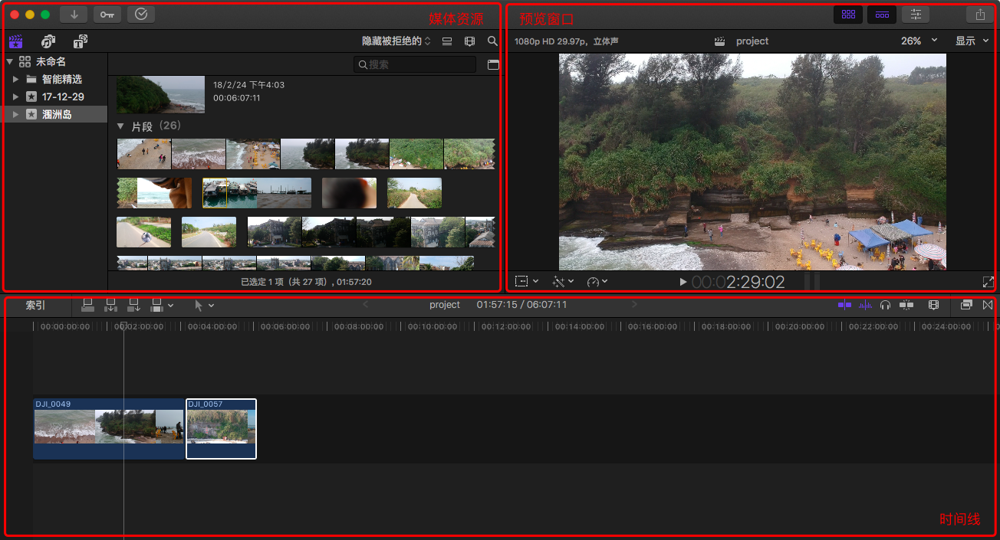
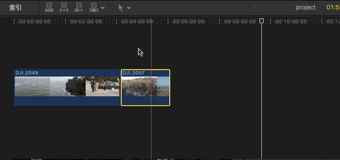
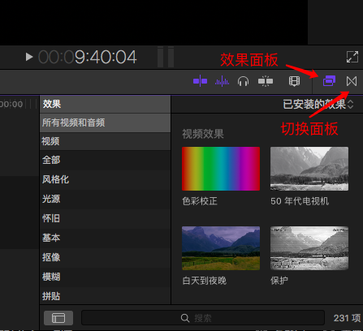
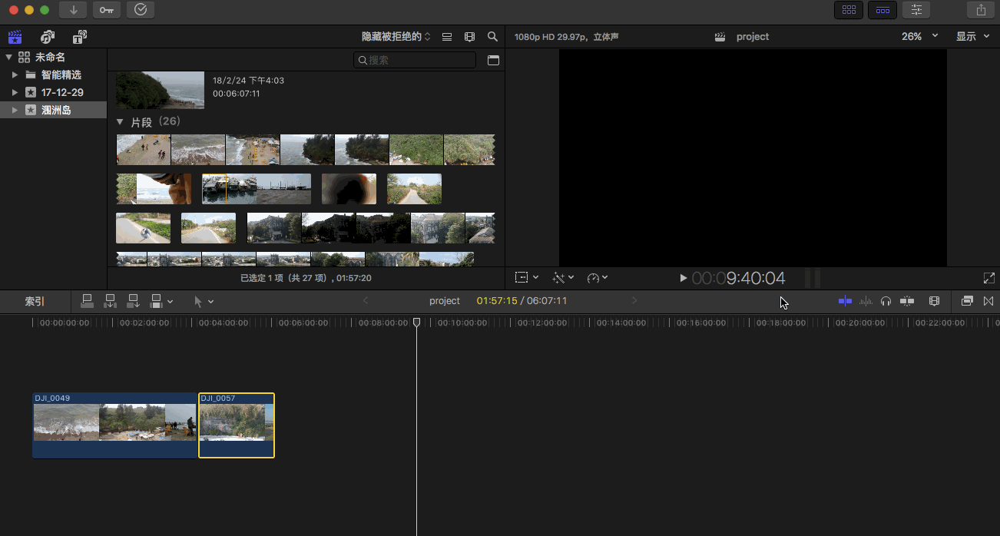
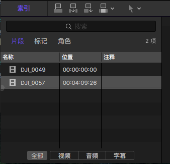

三大核心界面
- 媒体资源窗口
- 预览窗口
- 时间线

一些概念
- Media Files
- Clips and Projects
Clips = 片段/剪辑 (在软件中排列优化，文件定位)
Projects = 同时编辑的所有 Clips - Events(事件)
目录结构优化 - Libraries(包括所有用到的文件和媒体)
简单理解就是打包，右键打开打包文件可以看到文件
时间线
角色
双击视频，进行缩略图的设定和修改。可通过角色设定，来设定不同的颜色。
蓝色 = Video
绿色 = Audio
角色设置方法：
修改 - 编辑角色
播放/暂停
空格键可进行播放/暂停
鼠标直接拖动也可进行播放/暂停
预览时声音设置方法：
播放中是否播放视频／音频可以通过 显示 - 浏览／音频浏览 （快捷键：S/Shift+S）进行修改
双窗口
双窗口设置方法：
窗口 - 在工作区中显示 - 事件监视器
左边是素材预览，右边是时间线预览
一些快捷键
- HOME/END 跳转到剪辑的开头/结尾
- UP/DOWN 跳转到上一个／下一个片段
- CMD+/CMD- 放大/缩小
- SHIFT+Z 最大化剪辑，查看整个 CLIPS
吸附
吸附设置方法：
N 控制鼠标是否主动吸附视频，按住 N 键（黄色）开启自动吸附，默认（红色）关闭

两个效果面板

左侧为效果面板，右侧为转场面板
时间线视图大小

索引
索引用于查找，可通过名称查找，自动定位到搜索的视频。
